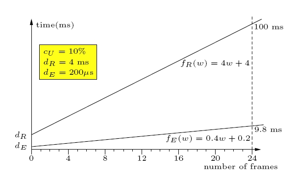
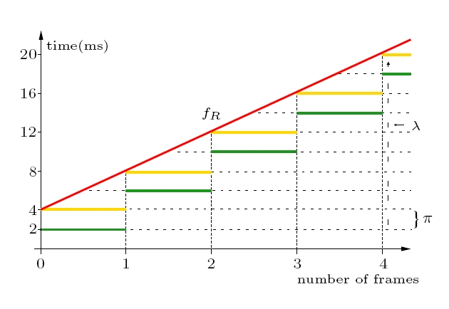

Abstract
Real-time software processes typically process quantifiable amounts of data under known temporal application requirements and resource constraints. Application requirements are, for example, the usually throughput-oriented rates at which video frames in an MPEG encoder must be processed, or the mostly latency-oriented rates at which sensor data in a control system must be handled. Resource constraints might be the maximum rate at which memory can be allocated or at which data can be written to a harddisk. Both application requirements and resource constraints in turn can often directly be related to the workload, in particular, the amount of involved data. For example, a real-time process that compresses video frames usually needs to
process a given number of frames within some finite response time. Similarly, resource performance may be characterized by the execution time needed to process a given number of frames.
Workload-oriented programming is a design methodology for specifying throughput and latency of real-time software processes on the level of individual process actions. In our process model, we call an invocation of process or system code an action of the invoking process. An action has an optional workload parameter, which describes the workload involved in
executing the action. The key programming abstraction is that the workload involved in executing a process action such as a system or procedure call fully determines the action's response time, independently of any previous or concurrent actions. The processes in our model are sequences of such actions. Each action's execution and response time depends only on the workload involved.
Moreover, each action is assigned a virtual periodic resource, or resource for short, on which it executes, out of a finite set of resources. It can be represented by a pair of a limit
and a period, also related to resource reserves. We introduce the notion of response-time (RT) functions and execution-time functions (ET) that characterize application requirements and resource constraints, respectively, at the level of individual process actions. Thus, for each action, there are two discrete functions, fR and fE, which characterize the action's performance in terms of its workload parameter. These functions are linked to the period and limit of the resources which the action uses.
The model thus enables sequential and concurrent real-time process composition while maintaining each action's workload-determined real-time behavior.
|
 |
 |
Contact: Silviu Craciunas